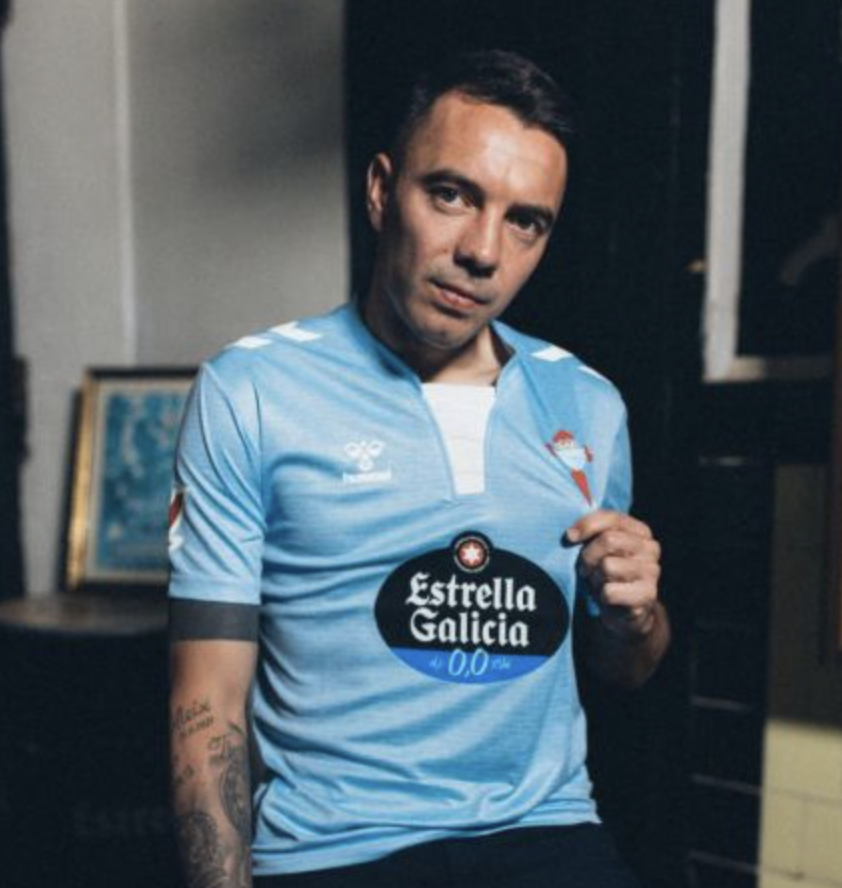
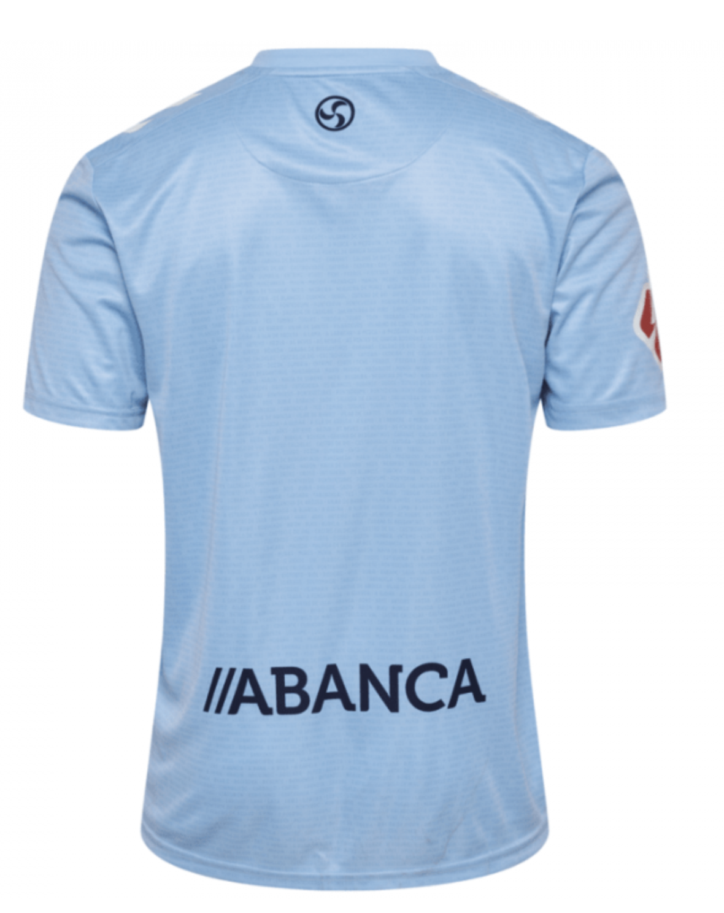
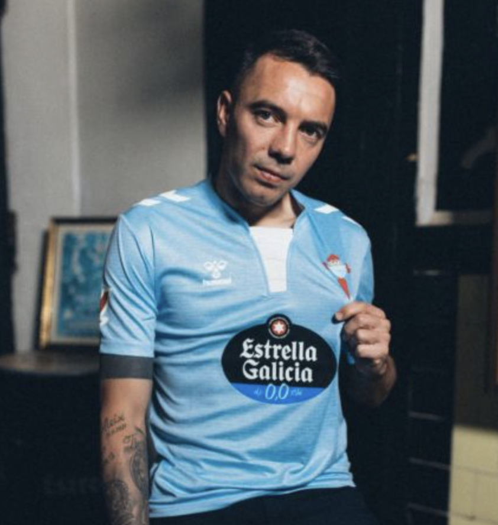
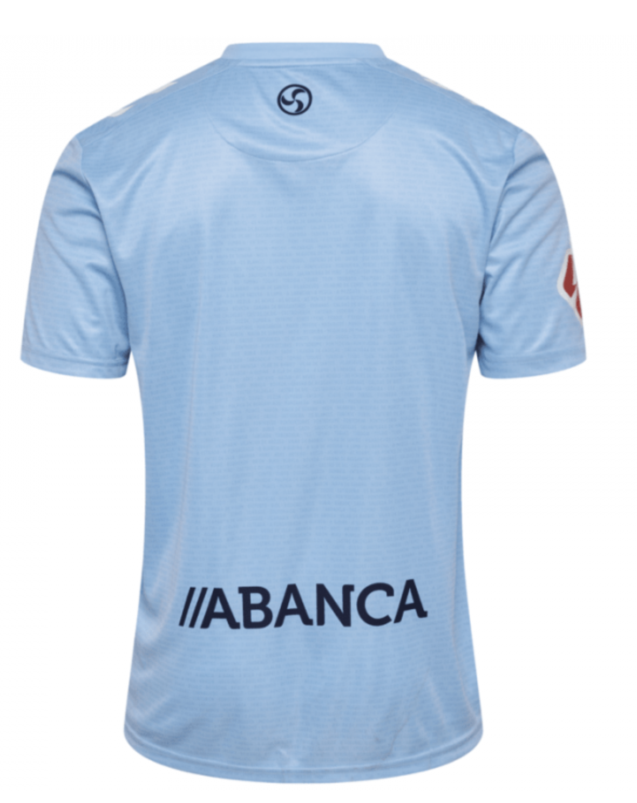

Equipación Oficial Temporada Actual
Esta camiseta del RC Celta de Vigo es la más reciente para la temporada en curso. Está confeccionada en un tejido ligero y transpirable que asegura la comodidad durante todo el partido, incluso en las condiciones más exigentes. El diseño respeta los colores icónicos del club y presenta detalles finos que homenajean la tradición celeste y la pasión de su afición.
El escudo bordado y las terminaciones de alta calidad demuestran la atención al detalle en cada puntada. Es perfecta tanto para lucir en el estadio como para coleccionistas que quieran sumar a su vitrina un trocito de historia del fútbol español.
Precio mínimo para la puja: 49,99€